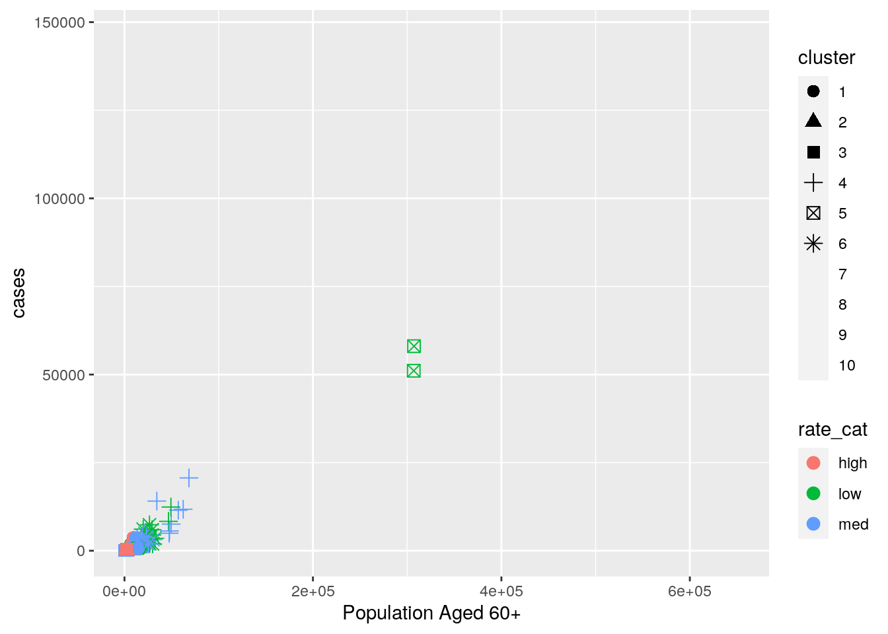

October 8, 2020
I originally chose two datasets, one that listed the unemployment rates by county and another that listed the covid-19 rates and death rates by county. I decided to use a third dataset because I did not have enough variables, and so I picked another dataset that listed demographic data such as the proportion of a county's population that was over the age of 60 and the number of ICU beds in that county. I chose these datasets because I wanted to do something that was related to the current pandemic, and I wanted to filter the results by different socioeconomic factors. I am thinking that in the Texas counties with high unemployment rates, I will also see higher rates of covid-19 cases, as well as lower numbers of ICU beds.
1. Tidying: Rearranging Wide/Long
Here I edited my three datasets using filter, select, and mutate so that they only included the variables that I needed and also so that they only included data from the specific dates that I wanted.
library(tidyverse)
covid <- read_csv("covidcases.csv")
ICU <- read_csv("ICUbeds.csv")
unemployment <- read_csv("unemployment.csv")
# texas unemployment data
texas_unemployment <- filter(unemployment, State == "Texas" &
Year == "2016" & Month == "October") %>% select(-c(Year,
Month, State)) %>% mutate(County = str_replace(County, " County",
""))
# texas covid data
texas_covid <- filter(covid, state == "Texas" & date == "2020-10-02") %>%
rename(County = county) %>% select(-c(date, state))
# texas ICU data
texas_ICU <- filter(ICU, State == "Texas") %>% select(-c(State))
# tydyr functions used to reshape summary statistics data in
# #32. Joining/Merging
I used a full_join to join my three datasets because I wanted all rows and columns from each dataset to be retained. There were a few counties that were not included in all 3 datasets, and so I decided to drop all rows containing NA values using drop_na in order to fix for this and make my data uniform. This drop did not make a difference on any analysis of my data because only three rows were dropped.
county_join <- full_join(texas_covid, texas_unemployment, by = c("County")) %>%
full_join(., texas_ICU, by = c("County")) %>% drop_na()3. Wrangling
The filter and select functions were both used to manipulate my initial datasets. Counties from Texas were selected for across all datasets, and data from the most recent dates were selected for from each dataset using filter(). Additionally, select() was used to remove columns that were not relevant to the data. Mutate() was used to create two new categorical variables in addition to the categorical variable that I already had, County. A variable for rate of unemployment was created and included a high, medium, and low value. A variable for the number of ICU beds was created and included only a high and low value. The arrange() function was used to arrange the data by greatest to least number of covid cases and ICU beds in order to better explore the datasets.
The summarize function was used to view the mean, standard deviation, n_distinct values, minimum, and maximum values for each numerical variable in the dataset. This was also grouped by rate_cat, or the rate of unemployment. After summarizing the data, tydyr functions pivot_longer and pivot_wider were used to reshape the data into a nicer looking table.
# filter and select used to manipulate datasets
texas_unemployment <- filter(unemployment, State == "Texas" &
Year == "2016" & Month == "October") %>% select(-c(Year,
Month, State)) %>% mutate(County = str_replace(County, " County",
"")) #texas unemployment data
texas_covid <- filter(covid, state == "Texas" & date == "2020-10-02") %>%
rename(County = county) %>% select(-c(date, state)) #texas covid data
texas_ICU <- filter(ICU, State == "Texas") %>% select(-c(State)) #texas ICU data
# mutate used to create categorical variables
county_join <- county_join %>% mutate(rate_cat = ifelse(Rate >
8, "high", ifelse(Rate <= 8 & 4 <= Rate, "med", "low")))
county_join <- county_join %>% mutate(ICU_cat = ifelse(`ICU Beds` >
250, "high", "low"))
# arrange by greatest to least number of COVID cases and
# greatest to least number of ICU beds
county_join %>% arrange(desc(cases))## # A tibble: 251 x 12
## County fips cases deaths Rate `ICU Beds` `Total Populati… `Population Age…
## <chr> <chr> <dbl> <dbl> <dbl> <dbl> <dbl> <dbl>
## 1 Harris 48201 146234 2615 5.1 918 4525519 651673
## 2 Dallas 48113 86500 1139 3.8 614 2552213 377154
## 3 Bexar 48029 58051 1323 3.7 648 1892004 307269
## 4 Tarra… 48439 51081 728 3.7 409 1983675 306980
## 5 Hidal… 48215 32346 1740 6.7 271 839539 119536
## 6 Travis 48453 29647 430 3.1 294 1176584 160972
## 7 El Pa… 48141 24999 531 4.8 203 834825 133011
## 8 Camer… 48061 22917 953 6.6 104 420201 71392
## 9 Nueces 48355 20661 419 5.3 115 358484 68411
## 10 Fort … 48157 16572 292 5 128 711421 107897
## # … with 241 more rows, and 4 more variables: `Percent of Population Aged
## # 60+` <dbl>, `Residents Aged 60+ Per Each ICU Bed` <chr>, rate_cat <chr>,
## # ICU_cat <chr>county_join %>% arrange(desc(`ICU Beds`))## # A tibble: 251 x 12
## County fips cases deaths Rate `ICU Beds` `Total Populati… `Population Age…
## <chr> <chr> <dbl> <dbl> <dbl> <dbl> <dbl> <dbl>
## 1 Harris 48201 146234 2615 5.1 918 4525519 651673
## 2 Bexar 48029 58051 1323 3.7 648 1892004 307269
## 3 Dallas 48113 86500 1139 3.8 614 2552213 377154
## 4 Tarra… 48439 51081 728 3.7 409 1983675 306980
## 5 Travis 48453 29647 430 3.1 294 1176584 160972
## 6 Hidal… 48215 32346 1740 6.7 271 839539 119536
## 7 Lubbo… 48303 12398 131 3.2 267 298042 49312
## 8 El Pa… 48141 24999 531 4.8 203 834825 133011
## 9 Collin 48085 14154 150 3.4 195 914075 135322
## 10 Smith 48423 4969 108 4.4 194 222277 47438
## # … with 241 more rows, and 4 more variables: `Percent of Population Aged
## # 60+` <dbl>, `Residents Aged 60+ Per Each ICU Bed` <chr>, rate_cat <chr>,
## # ICU_cat <chr># summarize used to find summary statistics, pivot_longer and
# pivot_wider used to reshape data
summary_data <- county_join %>% summarize_if(is.numeric, list(mean,
sd, n_distinct, min, max))
summary_data %>% pivot_longer(cols = 1:35, names_to = "statistic",
values_to = "value") %>% separate(statistic, sep = "_", into = c("variable",
"statistic")) %>% pivot_wider(names_from = "statistic", values_from = "value") %>%
rename(mean = fn1, sd = fn2, n_distinct = fn3, min = fn4,
max = fn5)## # A tibble: 7 x 6
## variable mean sd n_distinct min max
## <chr> <dbl> <dbl> <dbl> <dbl> <dbl>
## 1 cases 3159. 12320. 227 1 146234
## 2 deaths 64.8 241. 80 0 2615
## 3 Rate 4.88 1.73 64 1.7 13.7
## 4 ICU Beds 24.7 92.7 49 0 918
## 5 Total Population 109158. 391647. 251 564 4525519
## 6 Population Aged 60+ 18379. 57873. 249 89 651673
## 7 Percent of Population Aged 60+ 23.4 6.33 165 12.4 45.5# same as above except now grouped by rate_cat using
# group_by()
county_join %>% group_by(rate_cat) %>% summarize_if(is.numeric,
list(mean, sd, n_distinct, min, max)) %>% pivot_longer(cols = 2:35,
names_to = "statistic", values_to = "value") %>% separate(statistic,
sep = "_", into = c("variable", "statistic")) %>% pivot_wider(names_from = "statistic",
values_from = "value") %>% rename(mean = fn1, sd = fn2, n_distinct = fn3,
min = fn4, max = fn5) %>% select(-c(`Percent of Population Aged 60+_fn5`))## # A tibble: 21 x 7
## rate_cat variable mean sd n_distinct min max
## <chr> <chr> <dbl> <dbl> <dbl> <dbl> <dbl>
## 1 high cases 9.58e2 1.31e+3 13 82 3789
## 2 high deaths 3.72e1 5.21e+1 12 3 170
## 3 high Rate 1.04e1 1.45e+0 13 8.5 13.7
## 4 high ICU Beds 1.38e0 3.40e+0 3 0 10
## 5 high Total Population 2.10e4 1.98e+4 13 5262 63420
## 6 high Population Aged 60+ 4.06e3 2.91e+3 13 1372 9636
## 7 high Percent of Population Ag… 2.28e1 6.97e+0 13 15.2 NA
## 8 low cases 4.75e3 1.37e+4 67 1 86500
## 9 low deaths 7.48e1 2.21e+2 41 0 1323
## 10 low Rate 3.38e0 4.58e-1 18 1.7 3.9
## # … with 11 more rows4. Visualizing
In the heatmap, the variables with the highest correlations were population aged 60+ and COVID-19 cases and deaths, COVID-19 deaths and COVID-19 cases, number of ICU beds and COVID-19 deaths, number of ICU beds and COVID-19 cases, and population aged 60+ and number of ICU beds. There was almost no correlation between unemployment rate and any other variable.
In the geom_point ggplot we see a relationship between the number of COVID-19 cases and the number of people over aged 60. There are higher amounts of COVID-19 cases in populations with a higher amount of people aged 60+. This plot was also separated by rate of unemployment, but there is no clear relationship between unemployment rate, number of COVID-19 cases, and the number of people aged 60+. There does seem to be a slightly higher rate of unemployment where the population over age 60 is small, but it is not a big enough difference to take note of.
In the geom_bar plot there is a relationship between the number of COVID-19 cases and the unemployment rate. Texas counties with a medium unemployment rate, which is defined as a rate between 4 and 8, have the highest number of COVID-19 cases, and Texas counties with a low unemployment rate, defined as a rate below 4, have the second highest number of COVID-19 cases. Counties with high rates of unemployment, rates above 8, have very few COVID-19 cases. Additionally, counties with medium unemployment were more likely to have low numbers of ICU beds than counties with low unemployment. Low number of ICU beds is defined as having less than 250 ICU beds in the county. Counties with high rates of unemployment only had low amounts of ICU beds.
# correlation heatmap
cormat <- county_join %>% select_if(is.numeric) %>% cor(use = "pair")
tidycor <- cormat %>% as.data.frame %>% rownames_to_column("var1") %>%
pivot_longer(-1, names_to = "var2", values_to = "correlation")
tidycor %>% ggplot(aes(var1, var2, fill = correlation)) + geom_tile() +
scale_fill_gradient2(low = "snow", mid = "thistle", high = "thistle4") +
geom_text(aes(label = round(correlation, 2)), color = "black",
size = 4) + theme(axis.text.x = element_text(angle = 90,
hjust = 1)) + coord_fixed() + ggtitle("Correlation Heatmap of Numeric Variables")library(ggplot2)
# geom_point
ggplot(county_join, aes(`Population Aged 60+`, cases, color = Rate)) +
geom_point(size = 2, stat = "summary", fun = mean) + ggtitle("Population Aged 60+ vs. COVID-19 Cases by Rate of Unemployment") +
ylab("COVID-19 Cases") + scale_color_gradient(low = "lightpink3",
high = "palegreen4") + theme_linedraw() + scale_y_continuous(breaks = seq(0,
150000, 25000))# geom_bar
ggplot(county_join, aes(rate_cat)) + geom_col(aes(y = cases,
fill = ICU_cat)) + ggtitle("Unemployment Rate vs. COVID-19 Cases by Amount of ICU Beds") +
ylab("COVID-19 Cases") + xlab("Unemployment Rate") + theme_linedraw() +
scale_fill_manual("ICU_cat", values = c(high = "lavenderblush2",
low = "lightgoldenrod1"))5. Dimensionality Reduction
The silhouette plot was used to determine how many clusters to use, it told us that there are a total of k = 10 clusters and so that many clusters was used in this analysis. After creating the clusters, they were plotted on a geom_point ggplot and the variables Population Aged 60+ and cases were used because these two variables have one of the highest correlations among the variables in my data. The clustered data was then plotted with data separating the two chosen variables by either a high, medium, or low unemployment rate. However, we do not see a strong correlation between the clustered data and the unemployment rate data. Lastly, a goodness of fit line was plotted using the silhouette widths of each cluster. When looking at the silhouette plot, we can see that the silhouettes have an average width of 0.55, which means that a reasonable structure was found for the silhouettes.
## will want to scale variables first?
library(cluster)
# scale data
pam1 <- county_join %>% pam(k = 10)
pam1## Medoids:
## ID County fips cases deaths Rate ICU Beds Total Population
## [1,] 172 NA 48349 1724 34 4.1 9 48239
## [2,] 80 NA 48161 417 3 6.4 0 19646
## [3,] 123 NA 48247 111 3 9.1 0 5262
## [4,] 149 NA 48303 12398 131 3.2 267 298042
## [5,] 217 NA 48439 51081 728 3.7 409 1983675
## [6,] 240 NA 48485 1930 25 4.1 24 131778
## [7,] 243 NA 48491 8897 144 3.3 90 508313
## Population Aged 60+ Percent of Population Aged 60+
## [1,] 10925 22.6
## [2,] 5012 25.5
## [3,] 1372 26.1
## [4,] 49312 16.5
## [5,] 306980 15.5
## [6,] 25521 19.4
## [7,] 81426 16.0
## Residents Aged 60+ Per Each ICU Bed rate_cat ICU_cat
## [1,] 1214 NA NA
## [2,] NA NA NA
## [3,] NA NA NA
## [4,] 185 NA NA
## [5,] 751 NA NA
## [6,] 1063 NA NA
## [7,] 905 NA NA
## [ reached getOption("max.print") -- omitted 3 rows ]
## Clustering vector:
## [1] 1 2 1 2 3 3 1 2 3 2 1 3 2 4 5 3 3 2 6 4 6 3 3 3 1
## [26] 2 1 1 2 2 7 2 3 2 3 1 1 3 3 3 3 3 8 3 2 6 2 3 1 1
## [51] 3 3 3 3 3 3 9 2 2 3 8 3 3 3 3 2 6 3 8 6 1 2 1 2 3
## [76] 3 3 8 3 2 2 2 4 3 2 3 3 2 2 6 6 2 6 1 3 3 3 3 1 10
## [ reached getOption("max.print") -- omitted 151 entries ]
## Objective function:
## build swap
## 14682.17 13625.56
##
## Available components:
## [1] "medoids" "id.med" "clustering" "objective" "isolation"
## [6] "clusinfo" "silinfo" "diss" "call" "data"pam1$silinfo$avg.width## [1] 0.5515645plot(pam1, which = 2) #choose number of clusterspamclust <- county_join %>% mutate(cluster = as.factor(pam1$clustering)) #cluster analysis
pamclust %>% ggplot(aes(`Population Aged 60+`, cases, color = cluster)) +
geom_point() #visualize clusterspamclust %>% group_by(cluster) %>% summarize_if(is.numeric, mean,
na.rm = T)## # A tibble: 10 x 8
## cluster cases deaths Rate `ICU Beds` `Total Populati… `Population Age…
## <fct> <dbl> <dbl> <dbl> <dbl> <dbl> <dbl>
## 1 1 1.37e3 3.75e1 5.19 6.12 52665. 11415.
## 2 2 5.06e2 1.26e1 5.28 1.39 20024. 4886.
## 3 3 1.07e2 3.74e0 4.74 0.309 5479. 1373.
## 4 4 1.08e4 1.81e2 4.69 101. 294712. 51434.
## 5 5 5.46e4 1.03e3 3.7 528. 1937840. 307124.
## 6 6 3.62e3 6.53e1 3.98 41.4 136532. 25028.
## 7 7 1.44e4 4.19e2 4.90 97 487900. 83132.
## 8 8 2.17e4 5.50e2 4.38 195. 876294. 127223.
## 9 9 8.65e4 1.14e3 3.8 614 2552213 377154
## 10 10 1.46e5 2.62e3 5.1 918 4525519 651673
## # … with 1 more variable: `Percent of Population Aged 60+` <dbl>county_join %>% slice(pam1$id.med)## # A tibble: 10 x 12
## County fips cases deaths Rate `ICU Beds` `Total Populati… `Population Age…
## <chr> <chr> <dbl> <dbl> <dbl> <dbl> <dbl> <dbl>
## 1 Navar… 48349 1724 34 4.1 9 48239 10925
## 2 Frees… 48161 417 3 6.4 0 19646 5012
## 3 Jim H… 48247 111 3 9.1 0 5262 1372
## 4 Lubbo… 48303 12398 131 3.2 267 298042 49312
## 5 Tarra… 48439 51081 728 3.7 409 1983675 306980
## 6 Wichi… 48485 1930 25 4.1 24 131778 25521
## 7 Willi… 48491 8897 144 3.3 90 508313 81426
## 8 El Pa… 48141 24999 531 4.8 203 834825 133011
## 9 Dallas 48113 86500 1139 3.8 614 2552213 377154
## 10 Harris 48201 146234 2615 5.1 918 4525519 651673
## # … with 4 more variables: `Percent of Population Aged 60+` <dbl>, `Residents
## # Aged 60+ Per Each ICU Bed` <chr>, rate_cat <chr>, ICU_cat <chr>county_join %>% ggplot(aes(`Population Aged 60+`, cases, color = rate_cat)) +
geom_point()pamclust %>% ggplot(aes(`Population Aged 60+`, cases, color = rate_cat,
shape = cluster)) + geom_point(size = 3)
pam_dat <- county_join %>% select(`Population Aged 60+`, cases) #goodness of fit
sil_width <- vector()
for (i in 2:10) {
pam_fit <- pam(pam_dat, k = i)
sil_width[i] <- pam_fit$silinfo$avg.width
}
ggplot() + geom_line(aes(x = 1:10, y = sil_width)) + scale_x_continuous(name = "k",
breaks = 1:10)plot(pam1, which = 2) #silhouette plot
...